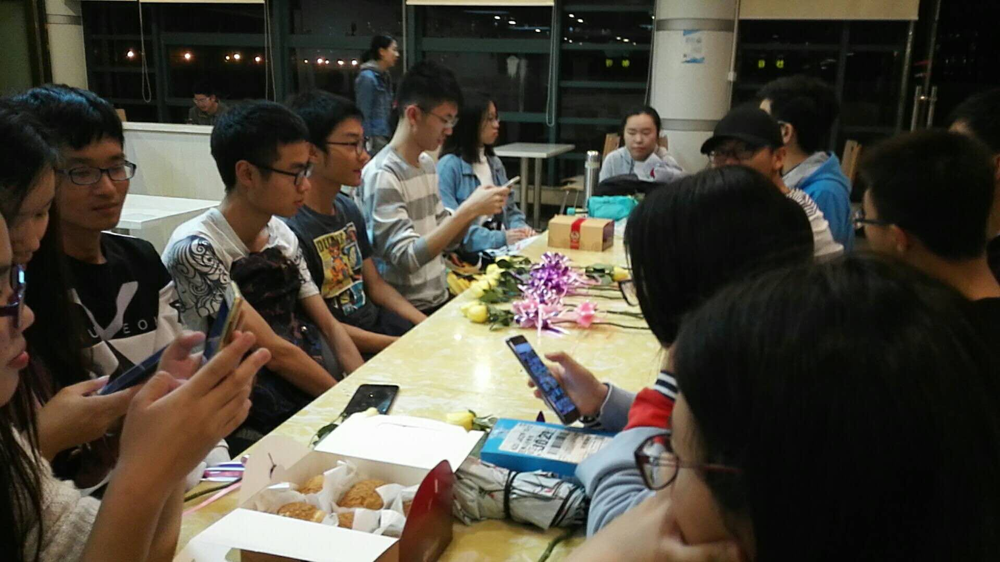
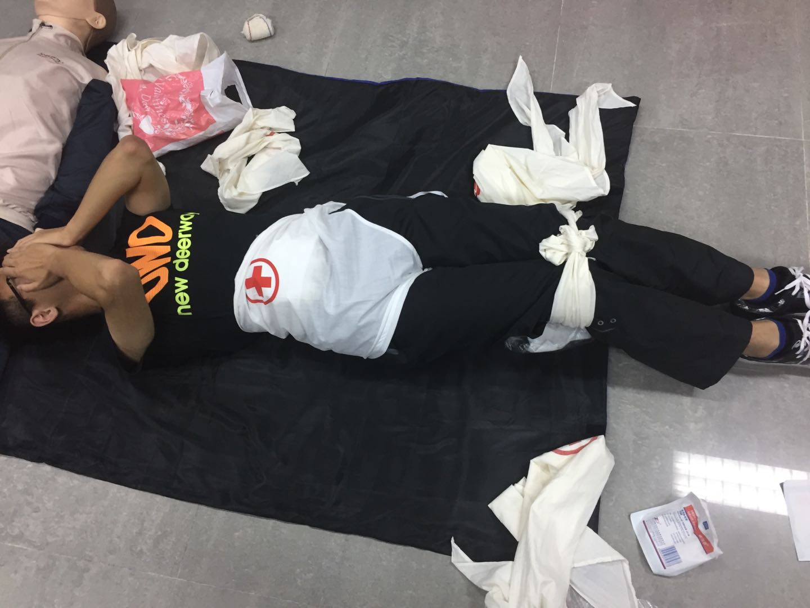
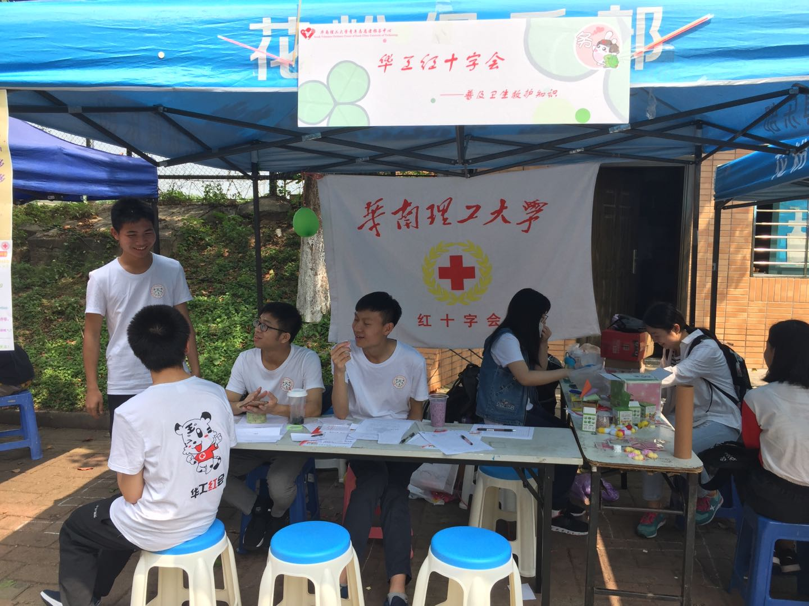
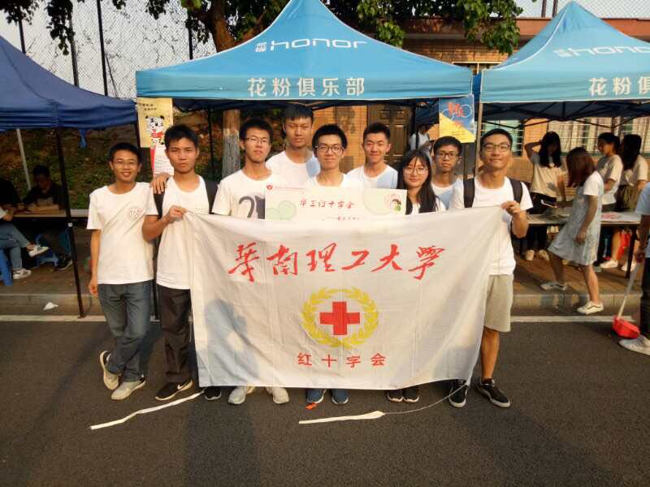
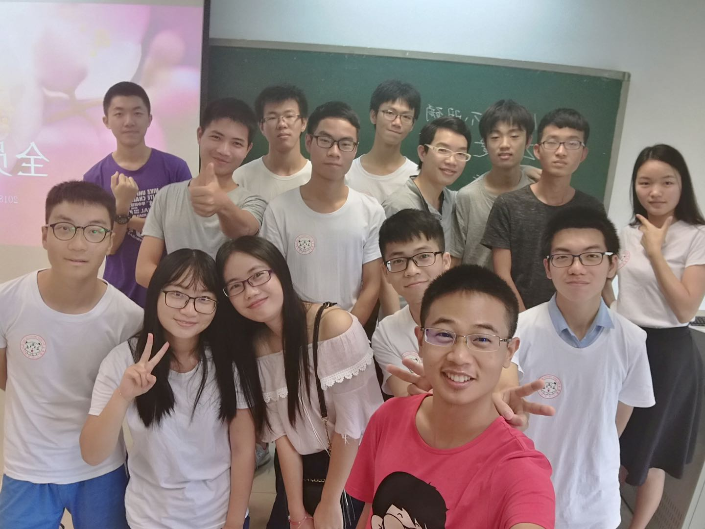

我到现在都不知道自己是怎么面试进红会的？
这里我还是想原封不动地还原一下当初为什么报这个社团，我在院组织面试时，因为过于高傲(shabi)，都被踢了，于是就报了社团，没想到，在面试的时候， 那些面试题（想想哪种动物比较符合我的性格。。。），我真的很想表示不屑（但我还是答了），可是第二年我还是屈服了。我把我能加入红十字的原因归结于在面试完后，我把我的名字从黑板上擦了，而没有擦掉其他人的。
初入大学和现在呆了两年，心境是截然不同，如果说两年前是白纸一张，现在当然还是白纸一张啦。如果我能早些知道自己要干什么兴许就不会加什么社团了，但是
人在懵懵懂懂得时候做出来的事更有意思。如果不加入哪会有后面这么多屁事有意思的事。
就是这些人，把我丢在南校 :(
心里顿时舒畅多了
很对不起要参赛的小伙伴，今年没有报名成功，其实消息早就通知了，我的消极怠惰让大家少了个综测加分的机会。Sorry!`
这绝对不是我
我之前认为，我大学四年可以很好地学习知识，不用认识什么人，认为以后毕业当个服务器管理人员都是个不错的机会，在地下100米和机器呆着对于我来讲是件很幸福的
事，我觉得我可能不会有什么朋友，但是在这里，和你们这群傻逼学霸相遇，我觉得很是幸运。
社团是个能提升自己的平台，从某种角度而言，这是正确的。我写这些不是在诱使你们留任，而是陈述一个客观事实！
2019年5月24日18点12分，有点晚了，我要去吃饭了，尽然写了这么多。
天啊，离我要交课程结果就剩一周了，心好累。
人们都是在追逐自己的梦想，这很好，但是人们都太快了，追逐地太快了，忘记了身边的美景。其实有时候慢下来未必是拖后腿， 只是让你短暂歇息，更好地角逐。社团其实真的没什么事，有时候你参与了，也是有很大的收获。
男女比和软院似的
十首当年有旧词，唱青歌翠几无遗
我在云计算课堂上写下了这句话：这种念ppt的课扼杀了我的思想，敲击键盘都软弱无力。19点31分
这男女比感人，所以我觉得我做了件伟大的事情